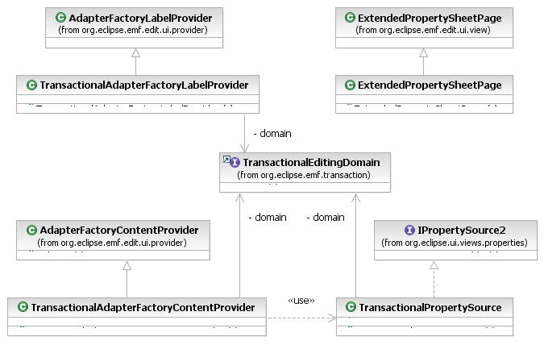

The org.eclipse.emf.transaction.ui plug-in provides some extensions of the building blocks of the EMF-generated editors that assist in adapting an editor to work with a TransactionalEditingDomain. These ensure that content providers and the property sheet use transactions where required for working with the contents of the resource set. Simply substitute the implementations provided by the EMF.Edit framework with these in the editor.

[as SVG]
The TransactionalAdapterFactoryContentProvider and TransactionalAdapterFactoryLabelProvider classes use read-only transactions to read the state of the resource set when updating the UI. The ExtendedPropertySheetPage creates TransactionalPropertySources to use read-only transactions for refreshing the properties display. Because EMF-based property sources always use Commands to perform edits, the TransactionalCommandStack automatically takes care of ensuring that the proper read/write transactions are employed. However, the TransactionalPropertySource does check, before executing a command, that the current thread does not already have a read-only transaction open, as an attempt to execute a command under such circumstances would fail. This is necessary because the refresh behaviour of property sheets sometimes triggers redundant updates to properties.
Copyright (c) 2006, 2007 IBM Corporation and others. All Rights Reserved.